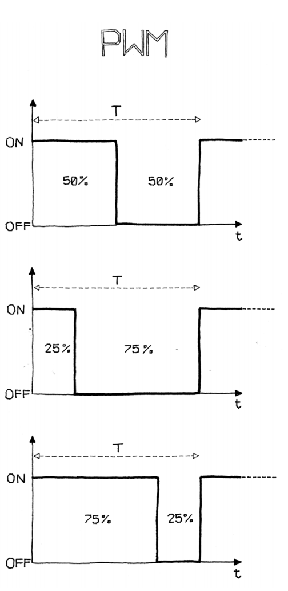
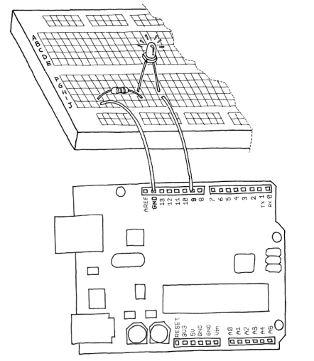
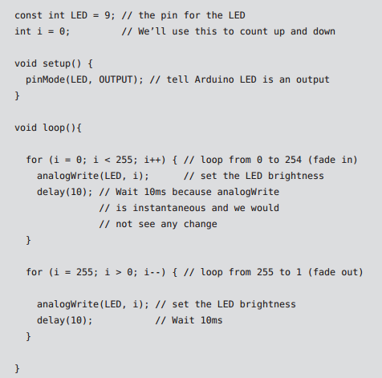

Controlling Light with PWM
if you change the numbers in the delay function until you don’t see the LED blinking any more, you will notice that the LED seems to be dimmed at 50% of its normal brightness. Now change the numbers so that the LED is on is one quarter of the time that it’s off. Run the sketch and you’ll see that the brightness is roughly 25%. This technique is called pulse width modulation (PWM), a fancy way of saying that if you blink the LED fast enough, you don’t see it blink any more, but you can change its brightness by changing the ratio between the on time and the off time.
This technique also works with devices other than an LED. For example, you can change the speed of a motor in the same way. While experimenting, you will see that blinking the LED by putting delays in your code is a bit inconvenient, because as soon as you want to read a sensor or send data on the serial port, the LED will flicker while it’s waiting for you to finish reading the sensor. Luckily, the processor used by the Arduino board has a piece of hardware that can very efficiently blink three LEDs while your sketch does something else. This hardware is implemented in pins 9, 10, and 11, which can be controlled by the analogWrite() instruction
For example, writing analogWrite(9,128) will set the brightness of an LED connected to pin 9 to 50%. Why 128? analogWrite() expects a number between 0 and 255 as an argument, where 255 means full brightness and 0 means off. NOTE: Having three channels is very good, because if you buy red, green, and blue LEDs, you can mix their lights and make light of any colour that you like!
Let’s try it out. Build the circuit that you see in Figure. Note that LEDs are polarized: the long pin (positive) should go to the right, and the short pin (negative) to the left. Also, most LEDs have a flattened negative side, as shown in the figure. Use a 270 ohm resistor (red violet brown).
 